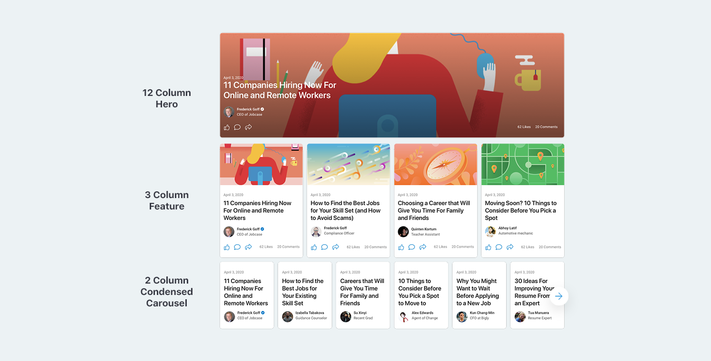
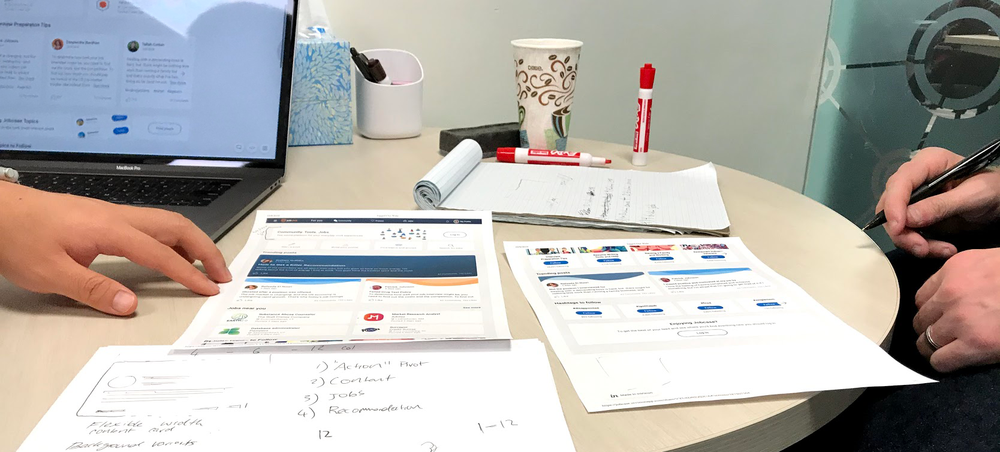

A curated feed for Jobcase users to easily access the jobs, conversations, and resources most relevant to them.
In an initiative to increase engagement of regular Jobcase members, the For You page was created as an experience that makes it easy and delightful to engage with and access different offerings from Jobcase experts and the Jobcase community. The For You page serves as the home for returning members and is a flexible framework for testing and introducing new features and content types.
Previously, the only way to engage with Jobcase was through a single feed which made it difficult for those who were new to the site to understand the extent of the value it can provide. It also siloed the most popular featues of Jobcase making it unnecessarily complicated to browse and engage in the areas you're most interested in in a single session. The For You page serves as both a community portal allowing users to enter or return to their social circles within the Jobcase feed, product marketing showing off new features, and a promotional platform for partners and resources.
A single page on the Jobcase website built to handle a significant amount of community and editorial content, job and user recommendations, and links to resources.
The For You page must be mobile-first and should work as a framework that allows product leadership to easily test new carousels, shelves, and cards while serving up the best experience Jobcase has to offer.
I served as the design lead for the For You page, ideating and presenting concepts, conducting user tests, iterating on designs, and providing guidance on the development.
For You was initially launched after approximately 6 weeks of design and development and continues to see regular iterations as the product vision shifts and new features are added to the Jobcase experience.
Below are key screens and interactions within the final Skip the Line app that reflect the state of a user who has already has an account and engaged in the Jobcase experience.
Featured article and a carousel of conversations the user has recently engaged with.
A user scrolls to browse revelant conversation, likes a post, and follows a recommended member.
Scrolling towards the bottom of the page to browse through content and jobs surfaced algorithmically.
User visits taps into a card promoting the COVID-19 resource center to land on the resource page.
Working with the lead Product Manager, we identified weaknesses in the existing community feed design and areas where we felt the most improvement was possible. Building on this evaluation, key measured of success were established to ensure the new design was going to best serve our users and the business goals of the organization. Through this, the new design was to focus on improved personalization and customization, promotion of high quality editorial content, a degree of product marketing for new users, and content creation.
With future extensibility and rapid testing being major considerations for the build, I settled on a modular card and shelf design that would allow for carousels and fit within a grid system for optimal responsiveness and usability. Each card could take conversations, editorial content, job listings, or promotions and have variants depending on the importance or quality. From there, the cards could be formatted into different sizes or interted into a group as an interactive carousel. This high degree of flexibility made it so that the density of content could easily be controlled and allowed for future card types to be developed to fit into the framework. The diagram below shows three different ways an article card can us used in this system.
Several rounds of designs were considered as we explored possibilities and worked to ensure what was built would stand as a solid foundation for future improvements and maintained a connection to the existing experience of the site. Some stakeholders were worried about the deemphasis of content contribution and the feeling of some content, for example a full width here, being too disconnected from the body. Adjustments were made and additional shelves were built to address the feedback. Because of the modularity of the design, changes and additions like a new card prompting users to respond to posts were easy to add and remove.
The prototypes were tested with existing users after a clear direction and viable product was established with internal stakeholders. The excersise included exploratory questions like how the participant uses the platform currently, where the platform fits into their existing job search, and what they felt was missing or lacking from the existig experience. We then got detailed feedback on the interface, usability, and the order of the content with a card sorting excersise.
With the quantitative feedback gathered and high fidelity mocks created, I worked with a team of five developers to begin building out the components using Zeplin as a handoff tool, with daily standups and frequent in-person review cycles essential to bringing the concept to the screen. As this project was part of the transition to a component-based design systems, we were able to ensure the elements of the build could be reused for future projects.
The first version of For You was launched to our userbase at the end of 2019 and response was measured closely, both as sentiment within conversations in the community and as qualitative feedback through engagement and content contribution metrics. As a high level metric, we saw a 30% increase in likes and comments post-launch and the framework was effective in continuing to push the design later as we discovered low engagement shelves that were replaced and iterated on. A channel was created for internal users to provide feedback about bugs and desired features.
In the months after launch, we continued to monitor the responce and think through ways to improve the product for our members. Future variants were introduced with widgets that made it easier to follow topics, ask questions to the community, provide job preferences, and add information and history to ones profile.
Features that would have made for an optimal user experience like a smarter sort and recommendation algorithm and infinite scroll were not possible at the time of launch. Although these features were recognized as important for the best experience and had the possibility of high returns, they were not seen as viable.
With any community, the variance of content length and type is immense and this was not as well planned for as it could have been during the initial builds. Cards were most effective when there was a title and a long paragraph with limited markup but in practice many of the posts our users contributed made use of special formatting, frequent line breaks, and sometimes no titles. Many of the mockups also relied on beautiful imagery in groups or topics that ended up being low quality in practive.
One of the goals of the For You pages was to bridge the gap between editorial content from paid contributors and user generated content, but stakeholders had conflicting ideas on which should be prioritized so we often found ourselves flipping between two between iterations based on feedback, trying to please all parties.
While we continue to identify areas for improvement and evolution, the For You page was a success in leading to strong, measureable improvements in engagement through likes and comments as well as through content contribution. It also provided a strong base for future resource pages that we were able to adapt to help users navigate the COVID-19 pandemic and mass unemployment.